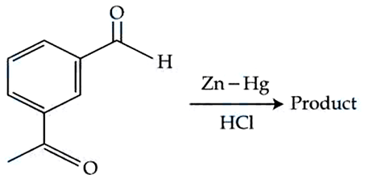

🧪 Aldehydes Ketones & Carboxylic Acids
57
Total Questions
5
Years
3
Clusters
Question Clusters
CHEM-ALDEKETO-NUCLEOPHILIC_ADDITION_CARBONYL
Aldehydes Ketones & Carboxylic Acids: Nucleophilic Addition to Carbonyls (HCN, NaHSO3, Grignard)
CHEM-ALDEKETO-CARBOXYLIC_ACID_DERIVATIVES
Aldehydes Ketones & Carboxylic Acids: Carboxylic Acids & Acid Derivatives
CHEM-ALDEKETO-ALDOL_CANNIZZARO_TESTS
Aldehydes Ketones & Carboxylic Acids: Aldol Condensation, Cannizzaro & Carbonyl Identification
Year-wise Frequency
| Year | Questions | Frequency |
|---|---|---|
| 2021 | 17 | |
| 2022 | 12 | |
| 2023 | 11 | |
| 2024 | 14 | |
| 2025 | 3 |
Questions
Showing first 50 of 57 questions.
Q46 (2021 Shift 2)
Given below are two statements : Statement : The nucleophilic addition of sodium hydrogen sulphite to an aldehyde or a ketone involves I proton transfer to form a stable ion. Statement II : The nucleophilic addition of hydrogen cyanide to an aldehyde or a ketone yields amine as final product. In the light of the above statements, choose the most appropriate answer from the options given below :
CHEM-2021-0101-S2-Q046
Q49 (2021 Shift 2)
Match List-I with List-II List-I List-II Test/Reagents/Observation(s) Species detected
CHEM-2021-0101-S2-Q049
Q37 (2021 Shift 1)
Mesityl oxide is a common name of:
CHEM-2021-0101-S1-Q037
Q38 (2021 Shift 1)
Given below are two statements: Statement-I: Retardation factor (Rf) can be measured in meter/centimetre. Statement-II: Rf value of a compound remains constant in all solvents. Choose the most appropriate answer from the options given below:
CHEM-2021-0101-S1-Q038
Q35 (2021 Shift 1)
Reagent, 1− naphthylamine and sulphanilic acid in acetic acid is used for the detection of
CHEM-2021-0101-S1-Q035
Q51 (2021 Shift 2)
Consider the above reaction where of benzoic acid is used to get of m-bromo benzoic acid. The 6. 1 g 7. 8 g percentage yield of the product is ___ . (Round off to the Nearest integer) [Given : Atomic masses : C = 12. 0 u, H : 1. 0 u, O : 16. 0 u, Br = 80. 0 u ]
Answer:
78CHEM-2021-0101-S2-Q051
Q60 (2021 Shift 2)
In Tollen's test for aldehyde, the overall number of electron(s) transferred to the Tollen's reagent formula [Ag (NH3)2]+ per aldehyde group to form silver mirror is ___.(Round off to the Nearest integer)

Answer:
2CHEM-2021-0101-S2-Q060
Q37 (2021 Shift 1)
For above chemical reactions, identify the correct statement from the following:
CHEM-2021-0101-S1-Q037
Q48 (2021 Shift 1)
Orlon fibres are made up of:
CHEM-2021-0101-S1-Q048
Q42 (2021 Shift 2)
Which one of the following gases is reported to retard photosynthesis?
CHEM-2021-0101-S2-Q042
Q47 (2021 Shift 1)
Which one of the following reactions will not form acetaldehyde?
CHEM-2021-0101-S1-Q047
Q48 (2021 Shift 2)
A reaction of benzonitrile with one equivalent CH3 MgBr followed by hydrolysis produces a yellow liquid "P". The compound "P" will give positive ________
CHEM-2021-0101-S2-Q048
Q49 (2021 Shift 1)
The correct sequential addition of reagents in the preparation of 3− nitrobenzoic acid from benzene is:
CHEM-2021-0101-S1-Q049
Q44 (2021 Shift 2)
2, 4 −DNP test can be used to identify :
CHEM-2021-0101-S2-Q044
Q45 (2021 Shift 1)
The correct order of reactivity of the given chlorides with acetate in acetic acid is :

CHEM-2021-0101-S1-Q045
Q46 (2021 Shift 2)
For the reaction given below : The compound which is not formed as a product in the reaction is a :
CHEM-2021-0101-S2-Q046
Q49 (2021 Shift 2)
Which among the following is not a polyester ?
CHEM-2021-0101-S2-Q049
Q37 (2022 Shift 1)
Which of the following is an example of conjugated diketone?

CHEM-2022-0101-S1-Q037
Q46 (2022 Shift 1)
Two statements are given belwo : Statement I : The melting point of monocarboxylic acid with even number of carbon atoms is higher than that of with odd number of carbon atoms acid immediately below and above it in the series. Statement II : The solubility of monocarboxylic acids in water decreases with increase in molar mass. Choose the most appropriate option :
CHEM-2022-0101-S1-Q046
Q57 (2022 Shift 2)
When 200 mL of 0. 2 M acetic acid is shaken with 0. 6 g of wood charcoal, the final concentration of acetic acid after adsorption is 0. 1 M . The mass of acetic acid adsorbed per gram of carbon is g .
Answer:
2CHEM-2022-0101-S2-Q057
Q37 (2022 Shift 2)
Given below are two statements: one is labelled as Assertion and the other is labelled as Reason. Assertion: A mixture contains benzoic acid and napthalene. The pure benzoic acid can be separated out by the use of benzene. Reason: Benzoic acid is soluble in hot water. In the light of the above statements, choose the most appropriate answer from the options given below.
CHEM-2022-0101-S2-Q037
Q43 (2022 Shift 2)
Toluene can be easily converted into benzaldehyde by which of the following reagents?
CHEM-2022-0101-S2-Q043
Q45 (2022 Shift 2)
The reagent, from the following, which converts benzoic acid to benzaldehyde in one step is
CHEM-2022-0101-S2-Q045
Q45 (2022 Shift 1)
Which of the following reactions will yield benzaldehyde as a product?
CHEM-2022-0101-S1-Q045
Q46 (2022 Shift 1)
' A ' and ' B ' respectively are
CHEM-2022-0101-S1-Q046
Q59 (2022 Shift 1)
The number of statement(s) correct from the following for Copper is/are (A) Cu(II) complexes are always paramagnetic (B) Cu(I) complexes are generally colourless (C) Cu(I) is easily oxidized (D) In Fehling solution, the active reagent has Cu(I)
Answer:
3CHEM-2022-0101-S1-Q059
Q46 (2022 Shift 2)
Decarboxylation of all six possible forms of diaminobenzoic acids C6H3(NH2)2 COOH yields three products A, B and C . Three acids give a product ' A ', two acids gives a product ' B ' and one acid give a product ' C '. The melting point of product ' C ' is
CHEM-2022-0101-S2-Q046
Q44 (2022 Shift 2)
Consider the following reaction, 1. Cl2 / hv − A → 4 −bromophenylacetic acid 2. CN− 3. H2O/H+/Δ What is in the above reaction? A
CHEM-2022-0101-S2-Q044
Q46 (2022 Shift 1)
Given below are two statements : Statement I: The esterification of carboxylic acid with an alcohol is a nucleophilic acyl substitution. Statement II: Electron withdrawing groups in the carboxylic acid will increase the rate of esterification reaction. Choose the most appropriate option
CHEM-2022-0101-S1-Q046
Q43 (2023 Shift 1)
Match List-I with . List-I List-II Name of reaction Reagent used A Hell-Volhard Zelinsky reaction I NaOH + I2 B Iodoform reaction II ( i ) CrO2Cl2, CS2 ( ii ) H2O Etard reaction C III ( i ) Br2 / red phosphorus ( ii ) H2O D Gatterman-Koch reaction IV CO, HCl, anhyd . AlCl3 Choose the correct answer from the options given below:
CHEM-2023-0101-S1-Q043
Q45 (2023 Shift 1)
For the reaction Acetone RCH2Br + I- ⟶ RCH2I + Br- major The correct statement is
CHEM-2023-0101-S1-Q045
Q44 (2023 Shift 2)
The descending order of acidity for the following carboxylic acid is-
CHEM-2023-0101-S2-Q044
Q43 (2023 Shift 2)
Given below are two statements, one is labelled as Assertion A and the other is labelled as Reason R . Assertion A : can be subjected to Wolff-Kishner reduction to give Reason R : Wolff-Kishner reduction is used to convert into In the light of the above statements, choose the correct answer from the options given below:
CHEM-2023-0101-S2-Q043
Q45 (2023 Shift 1)
2 −hexene (i) O3 Products − → (ii) H2O The two products formed in above reaction are
CHEM-2023-0101-S1-Q045
Q37 (2023 Shift 2)
Choose the correct representation of conductometric titration of benzoic acid vs sodium hydroxide.

CHEM-2023-0101-S2-Q037
Q43 (2023 Shift 2)
Given below are two statements : Statement I : under Clemmensen reduction conditions will give Statement II : under Wolff-Kishner reduction condition will give In the light of the above statements, choose the correct answer from the options given below :
CHEM-2023-0101-S2-Q043
Q54 (2023 Shift 1)
Given below are two statements: one is labelled as Assertion A and the other is labelled as Reason R: Assertion A: Acetal/Ketal is stable in basic medium. Reason R: The high leaving tendency of alkoxide ion gives the stability to acetal/ketal in basic medium. In the light of the above statements, choose the correct answer from the options given below: (1) A is true but R is false (2) A is false but R is true (3) Both A and R are true and R is the correct (4) Both A and R are true but R is NOT the correct explanation of A explanation of A

Answer:
42CHEM-2023-0101-S1-Q054
Q57 (2023 Shift 2)
Number of compounds giving (i) red colouration with ceric ammonium nitrate and also (ii) positive iodoform test from the following is _________

Answer:
2CHEM-2023-0101-S2-Q057
Q57 (2023 Shift 1)
Match List I with List II. List I List II Reaction Reagents Hoffmann (A) Degradation (I) Conc. KOH, Δ Clemmensen (B) (II) CHCl3, NaOH /H3O+ reduction (C) Cannizzaro reaction (III) Br2, NaOH Reimer-Tiemann (D) (IV) Zn −Hg / HCl reaction (1) (A) - III, (B) - IV, (C) - II, (D) - I (2) (A) - II, (B) - IV, (C) - I, (D) - III (3) (A) - III, (B) - IV, (C) - I, (D) - II (4) (A) - II, (B) - I, (C) - III, (D) - IV
Answer:
13CHEM-2023-0101-S1-Q057
Q58 (2023 Shift 2)
Match List-I and List-II. List-I List-II A. Elastomeric polymer I. Urea formaldehyde resin B. Fibre polymer II. Polystyrene C. Thermosetting polymer III. Polyester D. Thermoplastic polymer IV. Neoprene Choose the correct answer from the options given below: (1) A-II, B-III, C-I, D-IV (2) A-II, B-I, C-IV, D-III (3) A-IV, B-III, C-I, D-II (4) A-IV, B-I, C-III, D-II
Answer:
2CHEM-2023-0101-S2-Q058
Q46 (2024 Shift 1)
Identify the correct set of reagents or reaction conditions ' X ' and ' Y ' in the following set of transformation
CHEM-2024-0101-S1-Q046
Q47 (2024 Shift 1)
Given below are two statements : Statements I : Acidity of α -hydrogens of aldehydes and ketones is responsible for Aldol reaction. Statement II : Reaction between benzaldehyde and ethanal will NOT give Cross - Aldol product. In the light of the above statements, choose the most appropriate answer from the options given below :
CHEM-2024-0101-S1-Q047
Q58 (2024 Shift 2)
In the Claisen-Schmidt reaction to prepare 351 g of dibenzalacetone using 87 g of acetone, the amount of benzaldehyde required is ______ g. (Nearest integer)
Answer:
318CHEM-2024-0101-S2-Q058
Q48 (2024 Shift 1)
Which among the following aldehydes is most reactive towards nucleophilic addition reactions?

CHEM-2024-0101-S1-Q048
Q50 (2024 Shift 1)
The incorrect statement regarding the given structure is
CHEM-2024-0101-S1-Q050
Q46 (2024 Shift 2)
Match List I with List II List - I (Test) List - II (Observation) A. Br2 water test I. Yellow orange or orange red precipitate formed B. Ceric ammonium nitrate test II. Reddish orange colour disappears Choose C. Ferric chloride test III. Red colour appears D. 2, 4 - DNP test IV. Blue, Green, Violet or Red colour appear the correct answer from the options given below:
CHEM-2024-0101-S2-Q046
Q47 (2024 Shift 2)
Which of the following compound can give positive iodoform test when treated with aqueous KOH solution followed by potassium hypoiodite.
CHEM-2024-0101-S2-Q047
Q48 (2024 Shift 2)
Which of the following compounds will give silver mirror with ammoniacal silver nitrate? A. Formic acid B. Formaldehyde C. Benzaldehyde D. Acetone Choose the correct answer from the options given below :
CHEM-2024-0101-S2-Q048
Q60 (2024 Shift 1)
From the compounds given below, number of compounds which give positive Fehling's test is Benzaldehyde, Acetaldehyde, Acetone, Acetophenone,Methanal, 4-nitrobenzaldehyde, cyclohexane carbaldehyde. β(1 i),

Answer:
3CHEM-2024-0101-S1-Q060
Q44 (2024 Shift 2)
Phenol treated with chloroform in presence of sodium hydroxide, which further hydrolysed in presence of an acid results
CHEM-2024-0101-S2-Q044